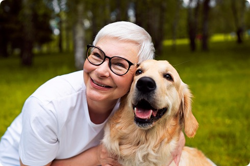
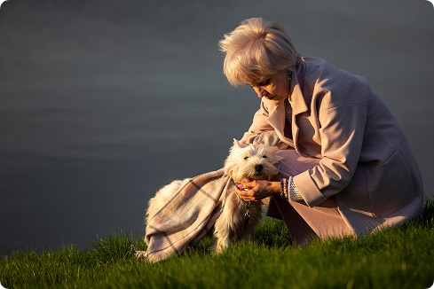
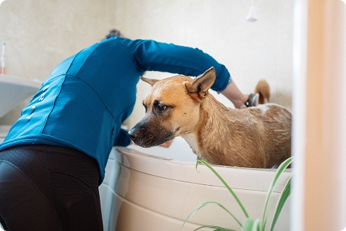

Services

Adopt a Senior Dog
Give a senior dog a forever home and enjoy their loyal and lovely companionship.

Foster a Senior Dog
Temporarily care for a senior dog and help them safely transition to a loving home.

Daily Walk
Senior citizens can visit the shelter to take senior dogs on gentle, supervised walks.

Team Member Check in
Scheduled visits from our team to ensure each dog's health, safety, and comfort.
Step by Step Process
1. Check our Catalog
We offer the best catalog of Senior Dogs currently living on shelters throughout the Bay Area waiting to be adopted by Senior citizens.
2. Fill Out the Documentation
After you choose a dog, you need to fill up the documentation, so we can learn more about you, your needs and your requirements.
3. Meet your Senior Dog
After we process the documents, we will schedule a meeting between you and your dog, so you can meet each other.